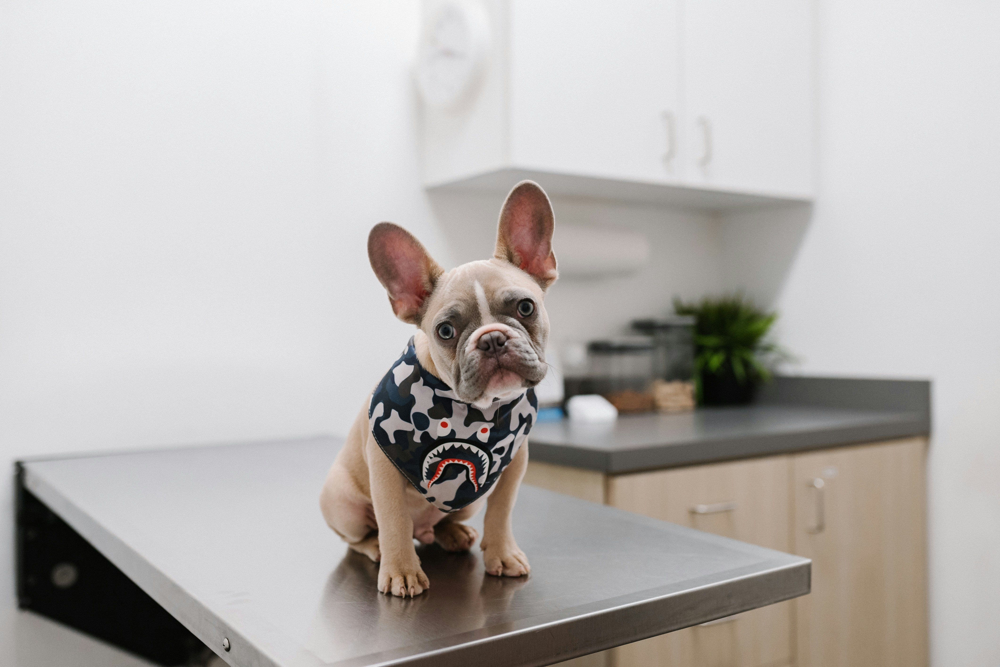

Know When It’s an Emergency for Your Pet
Quickly identify warning signs and understand whether your pet needs immediate ER care or can safely wait for a regular vet visit.
Emergency Guide
Use our interactive guide to determine if your pet’s symptoms require emergency care.
Quick Help
Access quick tips and first aid advice for common pet emergencies.

My Pet Info
Store important information about your pet for easy access during emergencies.
Prep Checklist
Be prepared with essential supplies and information before an emergency happens.
Emergency Guide
Use our interactive guide to determine if your pet’s symptoms require emergency care.
Click on each symptom category to expand and see the warning signs and recommended actions.
Breathing Difficulties Is your pet having trouble breathing?
- Constant panting in a dog that is not hot or active
- Any open-mouth breathing in a cat
- Blue, gray, purple, pale, or very dark red gums or tongue
- Belly or chest working hard to pull air in
- Wheezing, whistling, or harsh breathing sounds
- Neck extended out or hunched posture while breathing
- Breathing more than 30 breaths per minute at rest
- Sudden weakness, collapse, or severe coughing fits
What should you do?
See Your Regular Vet
- Respiratory rate is only slightly elevated and stays under 30 at rest
- No labored breathing or open-mouth breathing at rest.
- Gums remain normal pink
- Your pet is alert, comfortable, and stable
- Mild cough without distress
Go to Emergency Vet Immediately
- Breathing is labored, noisy, or getting worse
- Your pet is breathing with abdominal effort
- Open-mouth breathing is present
- Gums are pale, blue, gray, purple, or very dark red
- Your pet is weak, distressed, collapsing, or unable to rest comfortably
- Choking, repeated gagging, or severe coughing is happening
Trauma Has your pet experienced trauma or injury?
- Hit by car or fall from height or animal attack
- Bleeding or open wounds
- Difficulty moving
- Abnormal breathing
- Collapse or unconsciousness
- Visible fractures
What should you do?
See Your Regular Vet
- Minor trauma with no symptoms
- Small wounds that stop bleeding
- Pet is alert and walking
Go to Emergency Vet Immediately
- Major trauma (car accident, fall, animal attack)
- Bleeding that won’t stop
- Difficulty breathing or moving
- Collapse or unconsciousness
- Visible fractures or severe wounds
Urinary Blockage Is your cat straining to urinate or producing little to no urine?
- Straining with little/no urine
- Painful urination
- Blood in urine
- Excessive licking
- Vomiting or lethargy
- Painful abdomen
What should you do?
See Your Regular Vet
- Mild symptoms
- Normal urine output
- No severe pain
Go to Emergency Vet Immediately
- No urine produced
- Repeated straining
- Severe pain
- Vomiting or lethargy
Choking Is your pet choking?
- Blue, purple, or white gums or tongue
- No breathing or sudden silence
- Panic, distress, or frantic behavior
- Pawing at the mouth
- Excessive drooling with gagging or retching
- High-pitched, wheezing, or whistling sounds
- Collapse or unconsciousness
What should you do?
See Your Regular Vet
- Mild cough only and no signs of airway blockage
- Breathing is normal and your pet remains calm and stable
Go to Emergency Vet Immediately
- Airway blockage is suspected
- Gums are abnormal in color
- Your pet is gagging, pawing at the mouth, or struggling to breathe
- Collapse, unconsciousness, or severe distress occurs
Seizures Is your pet having a seizure?
- Collapsing or falling to the side
- Muscle twitching or convulsing
- Paddling of the legs
- Loss of consciousness
- Foaming at the mouth
- Loss of bladder or bowel control
- Confusion or disorientation
- Stumbling or loss of coordination
- Staring into space
What should you do?
See Your Regular Vet
- Single seizure lasts less than 2–3 minutes
- Known seizure history
- Full recovery within 15–30 minutes
- No injuries
- Normal behavior afterward
Go to Emergency Vet Immediately
- Seizure lasts more than 5 minutes
- Multiple seizures without recovery
- Two or more in 24 hours
- First-time seizure
- Delayed recovery
- Suspected toxin or trauma
- Collapse or breathing issues
Heatstroke Is your pet showing signs of overheating or heatstroke?
- Excessive panting
- Rapid breathing
- Thick drooling
- Abnormal gum color
- Dark tongue or hot skin
- Lethargy, confusion
- Collapse, vomiting, diarrhea
- Seizures or unconsciousness
What should you do?
See Your Regular Vet
- Mild panting improves quickly
- Pet remains alert and walking
- Normal gum color
- Symptoms resolve after cooling
Go to Emergency Vet Immediately
- Panting does not improve
- Abnormal gums
- Weakness or confusion
- Vomiting, collapse
- Seizures or unconsciousness
- Temp >104°F
Poison Ingestion Do you think your pet ate something toxic?
- Tremors, seizures
- Vomiting, diarrhea
- Breathing issues
- Weakness
- Pale gums
- Known toxin exposure
What should you do?
See Your Regular Vet
- Minor exposure
- No symptoms
- Vet already advised monitoring
Go to Emergency Vet Immediately
- Neurologic signs
- Vomiting/collapse
- Known toxins (xylitol, antifreeze, etc.)
- Unknown ingestion
Bleeding Is your pet bleeding or injured?
- Bleeding won’t stop
- Bleeding from body openings
- Pale gums
- Collapse
- Blood from body openings
- Deep wounds
What should you do?
See Your Regular Vet
- Minor bleeding stops quickly
- Small wound
- Pet is stable
Go to Emergency Vet Immediately
- Bleeding won’t stop
- Bleeding from body openings
- Signs of shock
- Deep wounds
- Suspected internal bleeding
Vomiting & Diarrhea Is your pet vomiting or having diarrhea?
- Symptoms lasting more than 24 hours, or more than 12 hours in very young or elderly pets
- Multiple episodes within a few hours
- Blood in vomit or stool, including black or tarry stool
- Lethargy, weakness, or collapse
- Refusing food or water, or unable to keep water down
- Signs of pain such as whining, a distended abdomen, or a praying position
- Repeated retching without producing anything
- Possible foreign body ingestion
What should you do?
See Your Regular Vet
- Mild symptoms improve within 24 hours
- No blood is present
- Your pet stays alert and active
- Your pet continues eating and drinking
- No signs of pain or repeated retching
Go to Emergency Vet Immediately
- Symptoms are severe or worsening
- Symptoms last more than 24 hours (or 12 hours in very young or elderly pets)
- Blood is present in vomit or stool
- Your pet is weak, lethargic, or collapsing
- Your pet cannot keep water down
- There is abdominal pain, bloating, or repeated retching
- A foreign body or bloat is suspected
Injured Paw or Limp Is your pet limping or favoring a paw or leg?
- Cannot walk or bear weight
- Extreme pain such as whimpering, panting, shaking, or aggression
- Limb looks bent, twisted, or out of place
- Severe swelling, heat, or bruising
- Open wound, bleeding, or broken nail
- Dragging the limb or knuckle-walking
- Limp started after trauma
- Limp lasts more than 24 to 48 hours
What should you do?
See Your Regular Vet
- Mild limp with no major swelling or deformity
- Your pet can still walk and bear some weight
- Symptoms are stable and not worsening
Go to Emergency Vet Immediately
- Your pet cannot bear weight
- Extreme pain such as whimpering, panting, shaking, or aggression
- Limb deformity, major swelling, or trauma is present
- Bleeding or an open wound is present
- Your pet is dragging the limb or seems neurologically abnormal
Quick Help
Access quick tips and first aid advice for common pet emergencies.
My Pet Info
Store important information about your pet for easy access during emergencies.
Prep Checklist
Prepare for emergencies with our comprehensive checklist of supplies and information to have on hand.
- First aid kit with pet-specific supplies
- Emergency contact list (vet, emergency vet, poison control)
- Pet’s medical records and vaccination history
- Carrier or crate for safe transport
- Leash and collar with ID tags
- Blanket or towel for warmth and comfort
- Extra food and water bowls
- Non-spill water container
- Any medications your pet is currently taking
- Flashlight and batteries
- National Animal Poison Control Center (1-888-426-4435)
About
PetTriage Guide is a quick-reference resource designed to help pet owners review common warning signs and better understand their pet’s condition. It focuses on helping users decide whether a situation may require emergency care or can safely be handled by a regular veterinary visit.
The goal of this site is to support pet owners during stressful moments by providing simple, easy-to-scan information that makes decision-making faster and more manageable.
Disclaimer
PetTriage Guide is for informational purposes only and does not replace professional veterinary advice, diagnosis, or treatment. If you are unsure about your pet’s condition, contact your veterinarian or an emergency animal hospital immediately.